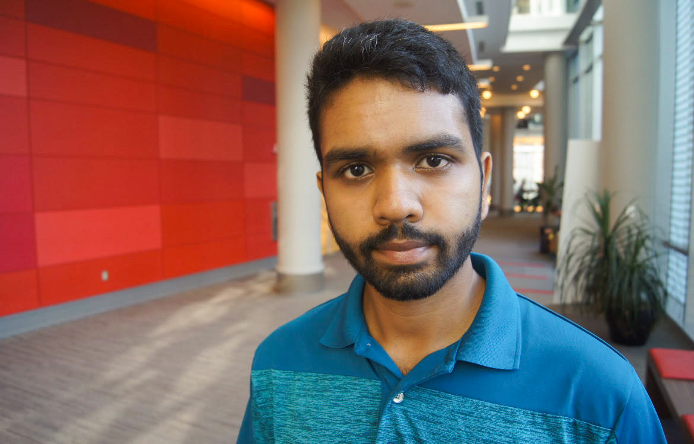

Sreeram Venkat

I am a second year NSF Graduate Research Fellow and CSEM Fellow at the Oden Institute, UT Austin pursuing a Ph. D. in Computational Science, Engineering and Mathematics. My research interests include
- Design and analysis of mathematical models to study physical and biological phenomena
- Reduced-order models of complex physical systems
- Machine Learning and Gaussian Process regression
with applications in astrophysics (gravitational waves), geophysics, and fluid dynamics. Working with scientists and engineers from different fields, I hope to use interdisciplinary approaches to solve problems.